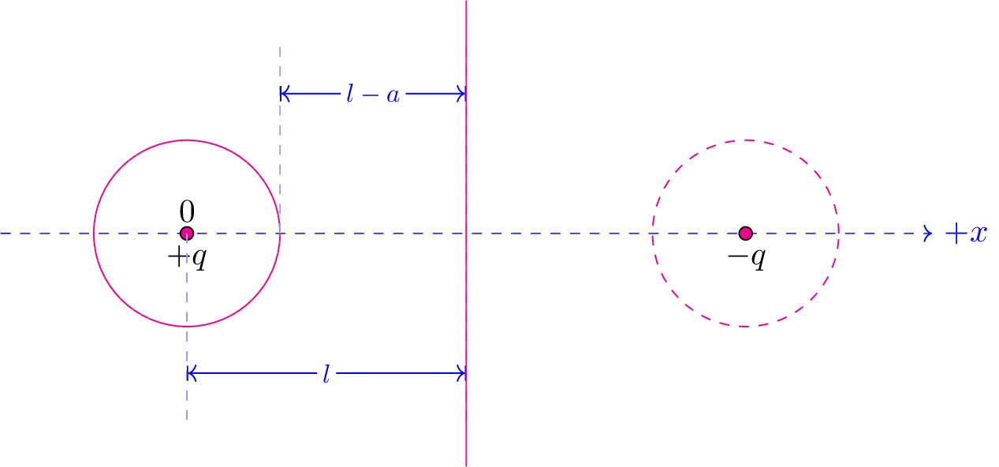

pre.tex
\documentclass[tikz]{standalone}\input{pre.tex}\begin{document}\begin{tikzpicture}
% \draw[thick] (0,0) ++ (0,-2) node[below, blue] {$+q$} rectangle ++(0.1,4) ;
% \draw[thick] (8,0) ++ (0,-2) node[below, red] {$-q$} rectangle ++(-0.1,4);
% \draw[->] (-1,0) -- node[above, xshift=-0.6em] {$r$} ++(50:2);
\draw[dashed, blue,->] (-5,0) -- (5,0) node[thick,right] {$+x$};
% % \draw[draw=none] (0,4) (0,-4);
% \fill[red] (0,0) circle (4pt) node[above,red] {$q$};
% \fill[blue] (4,0) circle (4pt) node[above,blue] {$q'$};
% % \draw[magenta] (4+0.48*4,0) node[red] {$\times$};
% % \draw[magenta] (-0.18*4,0) node[red] {$\times$};
% \draw[magenta] (-1,0) node[red] {$\times$};
\draw[magenta] (-3,0) circle (1cm);
\draw[fill=magenta] (-3,0) circle (2pt) node [above] {0} node [below] {$+q$};
\draw[fill=magenta] (3,0) circle (2pt) node [below] {$-q$};
\draw[magenta, dashed] (3,0) circle (1cm);
% \draw[axis] (0,2) -- (4,0) circle (2pt);
% \lineann[1]{90}{2}{$r$};
\lineann[-2]{0}{-3}{$l$};
\lineann[2]{0}{-2}{$l-a$};
\draw[magenta] (0,-2.5) -- (0,2.5);
\end{tikzpicture}\end{document}